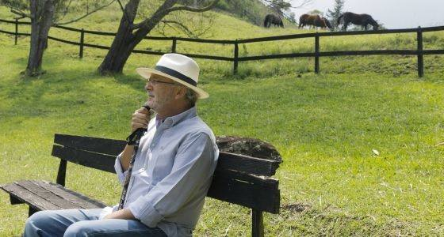

HÉCTOR ABAD FACIOLINCE:
“Firmar la paz sería recuperar la tierra de Colombia”
El escritor colombiano habla sobre ‘La Oculta’, a fiction about how it has changed the concept of ' family’ in your country.
Pablo de Llano/Cartagena de Indias


Héctor Abad Faciolince (Medellin, 1958) He returned to write about family. In 2010 published El olvido que seremos, una memoria sobre su padre, Héctor Abad, médico defensor de los derechos humanos asesinado en 1987 por paramilitares. Su nueva obra es La Oculta, una novela en la que aprovecha el nombre de una finca real de su familia para desarrollar la ficción de tres hermanos cuyas vidas representan precisamente cómo ha cambiado el concepto de la familia en Colombia, de lo tradicional a lo contemporáneo.
Pregunta. ¿Por qué de nuevo la familia?
Respuesta. Queramos o no a la familia, nos parezca espantosa —“Oh, family, que caiga un rayo de fuego sobre ti”, como decía Sartre— o admirable como a los conservadores, que la quieren preservar como célula de la sociedad, aún no nos podemos reproducir por generación espontánea y todos nacemos en una familia. Es un tema apasionante y yo sigo explorándolo. In La Oculta hay tres hermanos que viven la familia de maneras distintas. Pilar es la familia tradicional: como decía Thomas Mann, más que con su marido está casada con el matrimonio. Antonio es gay y se casa con un artista negro de Nueva York. Y Eva es una mujer que decide tener sola un hijo y que ha tenido muchas parejas. Trato de explorar los distintos tipos de familia dentro de una familia grande; la bisagra entre la familia conservadora y las nuevas familias.
- ¿Qué simbolizan la finca y la tierra en la sociedad colombiana?
- Casi todos nuestros abuelos, de los antioqueños [de la región de Antioquia, capital Medellín], son de pueblo. Era una región de pueblos y de campesinos, rich and poor, e incluso estos era común que tuviesen minifundios. Muchos de los desplazados de la guerra son campesinos pobres que tuvieron que dejar su pedazo de tierra, y cuando llegan a un barrio de la periferia de Medellín ellos lo primero que hacen es sembrar una pequeña era con dos cebollas, una mata de papa, una mata de yuca y una mata de plátano. Los desplazaron la guerrilla y los paramilitares. Y también a los ricos, hay que decirlo, los jodieron: a veces la guerrilla a un ganadero le mataba todas sus reses; llegaba el ganadero y encontraba 100 reses degolladas. Eso es agresivo, produce una furia descomunal. Al hermano de Pablo Escobar le secuestra un grupo rival mafioso el caballo, el mejor de Colombia, le piden rescate, él no lo paga y se lo devuelven castrado. Uribe, el expresidente, tiene una finca llamada El Ubérrimo. La relación con la finca es de toda las clases sociales en Antioquia, desde el campesino que tenía su pequeño cultivo hasta los grandes que armaron sus propios ejércitos y se corrompieron hasta el tuétano en la defensa de la tierra.
- ¿De dónde viene el nombre de Antioquia, and so, sin tilde?
- En griego creo que tiene esa acentuación, y es más fiel etimológicamente. Y el pueblo de La Oculta se llama Jericó. Esos pueblos del suroeste recibieron muchos nombres bíblicos, y se sospecha que hubo una fuerte colonización de marranos, de judíos conversos.
- Page 39: “Ser desobedientes y poco mandones, en un país de peones y capataces, siempre ha sido algo extraño, atípico, antipático”.
- R. Yes, sobre todo a los militares y políticos estilo Uribe les encanta decir que alguien tiene que mandar y muchos que obedecer. Esa actitud militar en la vida cotidiana y democrática me parece espantosa. En mi casa siempre se decía que está mal mandar y también obedecer.
- ¿Qué implica el uso abundante del “usted” en Colombia?
- En Antioquia el trato entre iguales es de vos, y usted es de respeto. No es como en Bogotá, que se usa el usted en la intimidad, y uno haciendo el amor dice: “Usted sí es muy linda”.
- Un amigo suyo decía en una conversación privada que usted es tan educado que cuando se cabrea, en vez de enfurecerse, se pone triste.
- Es que a mí la maldad me entristece, como que no me la explico, y ante un hecho inaceptable, más que protestar me dan ganas de desaparecer y de hundirme. Yo puedo ser guerrero por escrito, y creo que por eso escribo, porque escribiendo saco algo más auténtico de mí, más viril incluso.
- ¿Cree que Colombia conseguirá la paz?
R. Tendrían que ser muy estúpidos los de las FARC si no la firman pronto, este año, porque se les está desmoronando su asilo, que era Venezuela, porque nunca un Gobierno había cedido así y estaba tan dispuesto a firmar la paz, y porque esto contribuiría enormemente a bajar los índices de violencia. Espero que las FARC correspondan a esta oportunidad única. If not, otra vez vamos a postergar el conflicto 10 o 20 years. Tanto ellos, como los campesinos, como los viejos propietarios de mesofundios, minifundios o latifundios podríamos volver a lo más hermoso que tiene Colombia que es la tierra; y de todos los desastres que han dejado la guerra de guerrillas y el conflicto, lo único que ha dejado bueno es una tierra casi intocada, una extensión inmensa de país rural que la última generación ni siquiera conocemos, porque nadie podía ir por la violencia. Firmar la paz sería recuperar la tierra.